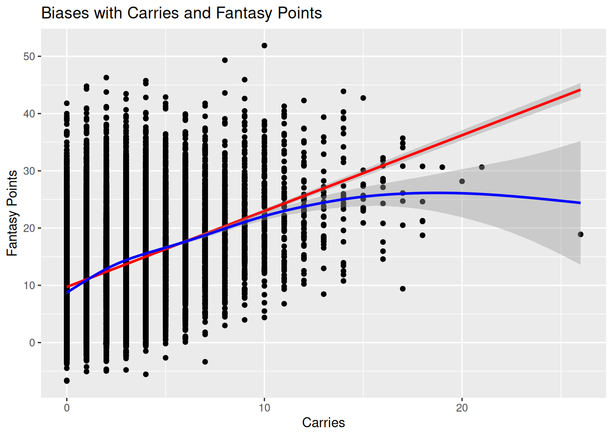
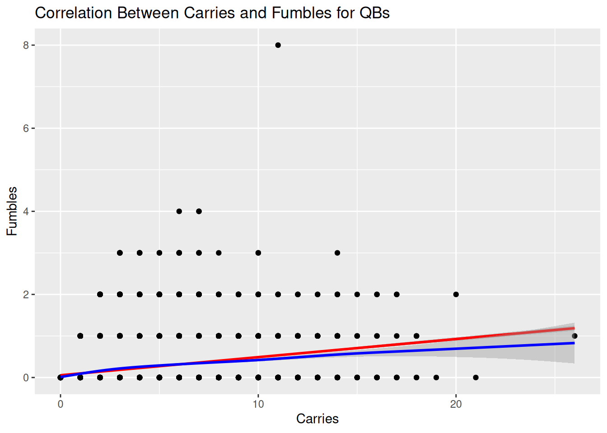
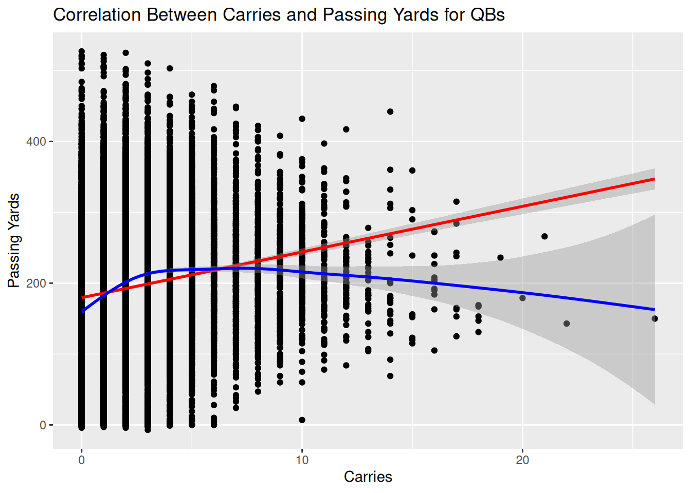

Code
#install.packages("remotes")
#remotes::install_github("DevPsyLab/petersenlab")
#remotes::install_github("FantasyFootballAnalytics/ffanalytics")
#update.packages(ask = FALSE)Jordan Wozniak
October 9, 2025
AI Disclosure: AI was not used.
Link to AI Transcript: not applicable
Background: This study explores causal inference and cognitive biases in evaluating quarterbacks’ carries and fantasy performance. Building on previous work comparing quarterback carries and fantasy points, the goal was to determine whether high carries truly increase value or if biases influence these perceptions. Common biases—availability bias, base rate neglect, and confirmation bias—may cause fantasy managers to overvalue rushing QBs based on memorable performances rather than consistent data.
Method: Data were taken from player_stats_weekly and filtered for QBs. Three correlational analyses were performed: carries vs. fantasy points, carries vs. fumbles, and carries vs. passing yards. Each included linear and nonlinear trend lines to observe relationships and possible bias patterns.
Results: The first study showed that more carries generally increase fantasy points but with diminishing returns after around 10–12 carries. The second found a weak positive correlation between carries and fumbles, showing a small rise in turnovers with more rushing. The third revealed that high-carry QBs often have lower passing yards, suggesting a trade-off between mobility and passing volume.
Discussion: The findings suggest that while carries can contribute to fantasy success, they are not the main causal factor. Players may overvalue mobile QBs due to availability bias and ignore base rates showing that consistent passing efficiency drives higher scores. Representativeness bias also appears when assuming all mobile QBs perform like elite examples such as Lamar Jackson or Josh Allen. Overall, causal inference helps reveal that multiple interacting factors—not just carries—drive fantasy outcomes.
In a previous blog article, labeled as Quarterback versus Carries. I viewed the correlation between the two to see if the higher amount of carries that a quarterback, would lead to assume that they would have more rushing yards, would lead to them being a more valuable pick, start, and keeper for the rest of the season compared to other quarterbacks. I understand that this topic was already used in my previous article. However, I still had the idea originally in my head, and that my claims and reasoning from that made me realize that there could be fallacies and biases that lead into my findings.
Does the availability bias lead fantasy managers to overvalue quarterbacks with high carries, even when their overall fantasy production isn’t consistently higher?
My hypothesis is that there might be a mis-correlation, and leads with many biases and heuristics. This includes availability bias, where the amount of rushes and rushing yards with the quarterback is too overweight. Base rate neglect, where we ignore all the other factors that make a quarterback earn points. Confirmation bias, where we only look for the supporting details that makes us believe that mobile quarterbacks are better than non-mobile quarterbacks. There are more that can explain my hypothesis, but these are the main ones. Leading into my prediction, I think that there is more that meets the eye, that carries aren’t the only thing that can have a quarterback score at a great rate, or that it isn’t a great factor to be by itself.
A new question to analysis casual inference, to see the possibities of biases and fallacies, is: Do a quarterback’s carries causally influence their weekly fantasy points, or is the relationship explained by other factors such as passing yards and touchdowns?
To answer this question, yes, there is a lot more than just carries and rushing yards. The quarterback position involves a lot of attributes, and maybe only saying one thing, like carries for instance, is a weak statement to say that one quarterback is better than the other.
From analyzing from year to year for all top quarterbacks. Sure, there are mobile quarterbacks that are sitting in the top spots. You have players like Josh Allen, Jalen Hurts, and Lamar Jackson that top the leaderboards. However, is it safe to say that their high amount of carries, but there are other factors that lead into their high production. You have players like Brock Purdy and Dak Prescott, or even Joe Burrow, they don’t have nearly as much carries, but they are efficient in the air, with passing yards, passing touchdowns, and low interceptions.
ggplot2::ggplot(
data = player_stats_weekly %>% filter(position == "QB"),
aes(
x = carries,
y = fantasyPoints)) +
geom_point() +
geom_smooth(
method = "lm", # linear best-fit line
color = "red") +
geom_smooth(
method = "gam", # nonlinear best-fit line
color = "blue"
) +
labs(
x = "Carries",
y = "Fantasy Points",
title = "Biases with Carries and Fantasy Points"
)`geom_smooth()` using formula = 'y ~ x'
`geom_smooth()` using formula = 'y ~ s(x, bs = "cs")'
ggplot2::ggplot(
data = player_stats_weekly %>%
filter(position == "QB"),
aes(
x = carries,
y = rushing_fumbles
)
) +
geom_point() +
geom_smooth(
method = "lm", # linear best-fit line
color = "red"
) +
geom_smooth(
method = "gam", # nonlinear best-fit line
color = "blue"
) +
labs(
x = "Carries",
y = "Fumbles",
title = "Correlation Between Carries and Fumbles for QBs"
)`geom_smooth()` using formula = 'y ~ x'
`geom_smooth()` using formula = 'y ~ s(x, bs = "cs")'
ggplot2::ggplot(
data = player_stats_weekly %>%
filter(position == "QB"),
aes(
x = carries,
y = passing_yards
)
) +
geom_point() +
geom_smooth(
method = "lm", # linear best-fit line
color = "red"
) +
geom_smooth(
method = "gam", # nonlinear best-fit line
color = "blue"
) +
labs(
x = "Carries",
y = "Passing Yards",
title = "Correlation Between Carries and Passing Yards for QBs"
)`geom_smooth()` using formula = 'y ~ x'
`geom_smooth()` using formula = 'y ~ s(x, bs = "cs")'
I took one of the correlational from my previous blog post, and added two more.
With the first study: The red line suggests a steady positive relationship — more carries generally mean more fantasy points. However, the blue line levels off and slightly declines after about 10–12 carries, showing diminishing returns: rushing helps up to a point, but excessive running doesn’t always lead to higher scores. This demonstrates availability bias and base rate neglect, fantasy players may overvalue rushing QBs because their big rushing games stand out, ignoring that consistent passing efficiency usually drives long-term fantasy success.
With the second study: The red line shows a weak upward trend, while the blue line closely follows it, suggesting that the relationship is fairly consistent and not strongly curved. The shaded areas represent confidence intervals, showing some uncertainty but confirming that higher carries generally come with a small increase in fumbles. In terms of bias, this connects to risk–reward perception — fantasy managers may overlook the higher fumble risk (loss of points) when overvaluing mobile QBs who run often.
With the third study: The red line suggests a slight positive relationship, but the blue nonlinear line reveals that QBs with moderate carries tend to have fewer passing yards on average, especially as carries increase beyond ~10 per game. This pattern implies that more mobile quarterbacks often pass less, supporting the idea of a trade-off between rushing and passing production. It can also reflect representativeness bias
The strength with this outweighs any limitations in my mind. The limitation can formulate from initially making a correlational analysis. The strength is that we can additionally view the biases that could be formulated and make inferences based off that.
Across the three analyses, quarterbacks with more carries tended to have slightly higher fantasy points, but also a small increase in fumbles and generally fewer passing yards. As viewed from fantasy football analyses, mobile quarters may tend to have the advantage, but there are some outliers that may mislead people, like Josh Allen and the Lamar Jackson, and creates a bias that says that mobile quarterbacks have to be better than other quarterbacks that don’t have the same rushing numbers. There are other pocket quarterbacks that majorly outscore, are considerably more consistent, than mobile quarterbacks. Passing yards, passing touchdowns, with their added completion percentage can suggest that they will consistently score more than a rushing-heavy quarterback, where if they don’t get rushing touchdowns, are led to a disadvantage. Overall, these findings highlight how availability bias and base rate neglect can lead fantasy players to overvalue mobile QBs based on memorable rushing plays rather than consistent data trends.
https://fantasydata.com/nfl/fantasy-football-leaders?scope=season&sp=2022_REG&position=qb&scoring=fpts_ppr&order_by=fpts_ppr&sort_dir=desc
R version 4.5.2 (2025-10-31)
Platform: x86_64-pc-linux-gnu
Running under: Ubuntu 24.04.3 LTS
Matrix products: default
BLAS: /usr/lib/x86_64-linux-gnu/openblas-pthread/libblas.so.3
LAPACK: /usr/lib/x86_64-linux-gnu/openblas-pthread/libopenblasp-r0.3.26.so; LAPACK version 3.12.0
locale:
[1] LC_CTYPE=C.UTF-8 LC_NUMERIC=C LC_TIME=C.UTF-8
[4] LC_COLLATE=C.UTF-8 LC_MONETARY=C.UTF-8 LC_MESSAGES=C.UTF-8
[7] LC_PAPER=C.UTF-8 LC_NAME=C LC_ADDRESS=C
[10] LC_TELEPHONE=C LC_MEASUREMENT=C.UTF-8 LC_IDENTIFICATION=C
time zone: UTC
tzcode source: system (glibc)
attached base packages:
[1] stats graphics grDevices utils datasets methods base
other attached packages:
[1] lubridate_1.9.4 forcats_1.0.1 stringr_1.6.0 dplyr_1.1.4
[5] purrr_1.2.0 readr_2.1.6 tidyr_1.3.1 tibble_3.3.0
[9] ggplot2_4.0.1 tidyverse_2.0.0 petersenlab_1.2.2
loaded via a namespace (and not attached):
[1] tidyselect_1.2.1 psych_2.5.6 viridisLite_0.4.2 farver_2.1.2
[5] S7_0.2.1 fastmap_1.2.0 digest_0.6.39 rpart_4.1.24
[9] timechange_0.3.0 lifecycle_1.0.4 cluster_2.1.8.1 magrittr_2.0.4
[13] compiler_4.5.2 rlang_1.1.6 Hmisc_5.2-4 tools_4.5.2
[17] yaml_2.3.10 data.table_1.17.8 knitr_1.50 labeling_0.4.3
[21] htmlwidgets_1.6.4 mnormt_2.1.1 plyr_1.8.9 RColorBrewer_1.1-3
[25] foreign_0.8-90 withr_3.0.2 nnet_7.3-20 grid_4.5.2
[29] stats4_4.5.2 lavaan_0.6-20 xtable_1.8-4 colorspace_2.1-2
[33] scales_1.4.0 MASS_7.3-65 cli_3.6.5 mvtnorm_1.3-3
[37] rmarkdown_2.30 reformulas_0.4.2 generics_0.1.4 rstudioapi_0.17.1
[41] reshape2_1.4.5 tzdb_0.5.0 minqa_1.2.8 DBI_1.2.3
[45] splines_4.5.2 parallel_4.5.2 base64enc_0.1-3 mitools_2.4
[49] vctrs_0.6.5 boot_1.3-32 Matrix_1.7-4 jsonlite_2.0.0
[53] hms_1.1.4 Formula_1.2-5 htmlTable_2.4.3 glue_1.8.0
[57] nloptr_2.2.1 stringi_1.8.7 gtable_0.3.6 quadprog_1.5-8
[61] lme4_1.1-37 pillar_1.11.1 htmltools_0.5.8.1 R6_2.6.1
[65] Rdpack_2.6.4 mix_1.0-13 evaluate_1.0.5 pbivnorm_0.6.0
[69] lattice_0.22-7 rbibutils_2.4 backports_1.5.0 Rcpp_1.1.0
[73] gridExtra_2.3 nlme_3.1-168 checkmate_2.3.3 mgcv_1.9-3
[77] xfun_0.54 pkgconfig_2.0.3